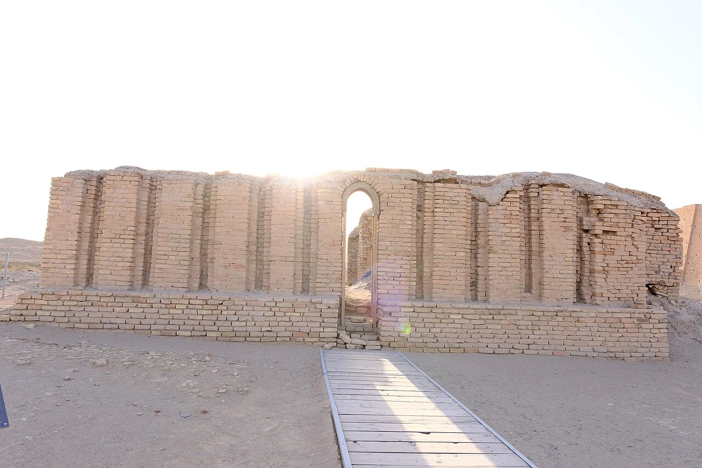

İlk şehirler bir gecede kurulmadı. Yaklaşık MÖ 4. binyılda Güney Mezopotamya'daki Uruk gibi yerleşimler büyüyüp ticaret, üretim ve yönetim merkezlerine dönüştü. Bu dönüşümün arka planında binlerce yıl önce başlamış çiftçilik, sulama ve gıda depolama vardı. Tarım şehirleri besledi; büyüyen şehirler de tarımı, emeği ve alışverişi yeniden örgütledi.
Tarım şehirlerden çok önce başlamıştı
İnsanların bitki ve hayvanları evcilleştirip çiftçilik yapmaya başlamasıyla ilk büyük yerleşimlerin ortaya çıkışı aynı olay değildir. Bereketli Hilal'in farklı bölgelerinde tahıllar ve hayvanlar binlerce yıl içinde evcilleştirildi; kalıcı çiftçi köyleri kentlerden çok daha önce vardı. Bu nedenle “tarım bulundu, hemen şehir kuruldu” şeklinde doğrusal bir hikâye kurmak yanıltıcıdır.
Çiftçilik bazı toplulukların aynı yerde daha uzun süre yaşamasını, nüfusun artmasını ve hasatın depolanmasını kolaylaştırdı. Yine de üretim iklime, toprağa, emeğe ve ürün kaybına bağlıydı; her köy düzenli olarak büyük bir fazla üretmiyordu. Kentleşmeye katkı veren şey, gıda üretiminin yanı sıra bu ürünleri saklayabilen, taşıyabilen ve dağıtabilen toplumsal ağların oluşmasıydı.
Güney Mezopotamya'da suyu yönetmek
Dicle ve Fırat'ın aşağı havzalarında yağış, tarım için çoğu yerde tek başına yeterli değildi. Çiftçiler suyu kanallar ve setlerle tarlalara yönlendirdi; sulama, arpa gibi ürünlerin yetişmesini destekledi. Kanalların açılması ve bakımında iş gücü ve yerel koordinasyon gerekiyordu. Nehir suyuna yakınlık, bataklıkların kurutulması, taşkınlar ve toprak kalitesi ise her yerleşime aynı koşulları sunmuyordu.
Sulama “şehirleri tek başına yarattı” demek de fazla kesindir. Arkeologlar kentleşmeyi tarımın yanında nüfus, zanaat, alışveriş, inanç, güç ve bölgesel çevre gibi etkenlerin birlikte şekillendirdiği uzun bir süreç olarak inceler. Büyük su işleri iş birliği gerektirebilirdi; ama bu işlerin her zaman tek bir merkezi yönetim tarafından başlatıldığı varsayılamaz.
Ürün fazlası ve iş bölümü
Hasatın bir bölümü hemen tüketilmek yerine depolanabildiğinde, toplumdaki herkesin günün her saatini yiyecek yetiştirmeye ayırması gerekmiyordu. Bazı insanlar çömlekçilik, dokumacılık, metal işçiliği, yapı ustalığı, taşıma, yazıcılık ve yöneticilik gibi işlerde uzmanlaşabildi. Bu uzmanlaşma karşılıklı bağımlılığı artırdı: zanaatkârın yiyeceğe, çiftçinin alete, yöneticinin ise iş gücü ve kayda ihtiyacı vardı.
Fazla ürünün kim tarafından üretildiği, toplandığı ve dağıtıldığı da önem taşıyordu. Depolar ve ölçü kapları, tahılın sayılmasını ve paylaştırılmasını kolaylaştırdı. Bazı kent merkezlerinde standart boyutlu, eğik ağızlı kaselerin işçilere tahıl payı vermek için kullanılmış olabileceği öne sürülür; bu yorum, bulunan kapların dağılımına dayalı bir açıklamadır, her kase için kesin bir kullanım kanıtı değildir.

Tapınak, saray, atölye ve tüccarlar
İlk şehirlerde ekonomik yaşam yalnızca bireysel çiftçilerden ibaret değildi. Tapınaklar, saraylar ve büyük haneler toprağı, depoları ve iş gücünü örgütleyen önemli kurumlardı. Bu kurumlara bağlı atölyelerde tahıl ve yün gibi ürünler işlenebiliyor; yöneticiler ürün giriş çıkışlarını ve çalışanlara yapılan dağıtımları kayda alabiliyordu. Kurumların rolü şehirden şehre ve dönemden döneme değişiyordu; bütün ekonomiyi tek bir tapınağın yönettiğini söylemek doğru olmaz.

Buradaki “şirketleri” bugünkü anonim şirketler gibi düşünmemek gerekir: antik Uruk'ta modern şirket hukuku, hissedar yapısı veya borsalar yoktu. Bunun yerine tüccarlar, zanaatkârlar, aile işletmeleri, tapınak ve saray atölyeleri ile yönetim depoları vardı. Bu örgütler üretimi ve ticareti büyütebildi; aynı zamanda toprağın, ürün fazlasının ve karar gücünün kimlerin elinde toplandığını etkiledi.
Mezopotamya'da bulunmayan kereste, taş ve metal gibi hammaddeler uzak bölgelerden getiriliyordu. Tahıl, dokuma ürünleri, yağ, balık ve seramik gibi ürünler değiş tokuşta kullanılabiliyordu. Tüccarların ve taşıyıcıların bağlantıları, bir kentin çevresini aşan ticaret yollarını geliştirdi. Böylece şehirler yalnızca yakınlarındaki tarlaların değil, uzak bölgelerle kurdukları alışveriş ilişkilerinin de merkezine dönüştü.
Para var mıydı? Madeni para henüz yoktu
Uruk'un yükseldiği MÖ 4. binyılda bugünkü anlamda basılmış madeni paralar kullanılmıyordu. Ödeme ve hesaplaşma; tahıl gibi mallarla, malların birbirine göre değerini belirleyerek ya da tartılmış gümüş üzerinden yapılabiliyordu. Bu uygulamalar her alışverişin aynı yöntemle gerçekleştiği anlamına gelmez: mal değişimi, ürün dağıtımı ve ölçü birimleri yan yana kullanılıyordu.
Gümüşün belirli ağırlıklarla ölçülmesi ve tahılın hesap birimi gibi kullanılması, fiyat ve borçların kayda geçirilmesini mümkün kıldı; fakat bunlar basılmış sikkeyle aynı şey değildi. Bilinen ilk sikkeler Mezopotamya kentlerinden çok sonra, MÖ 1. binyılda ortaya çıktı. Bu yüzden ilk şehirlerin ekonomisini “para yoktu” diye basitleştirmek de, “ilk madeni para burada bulundu” demek de doğru olmaz.
Yazı, hesap tutma ihtiyacından nasıl doğdu?
İlk kil tabletlerin bir bölümü tahıl, hayvan, emek ve teslim edilen mallarla ilgili idari kayıtlardır. Kayıt tutmak, büyük depoları ve üretim ağlarını izlemeye; kimden ne alındığını, kime ne verildiğini hatırlamaya yarıyordu. İşaretler zamanla gelişerek çivi yazısı geleneğine dönüştü. Yazının ilk işlevi yalnızca edebiyat değildi: şehir yaşamında hesap, yönetim ve iletişim için de kullanılıyordu.
Bu belgeler bize ekonomi hakkında çok şey söyler; ancak çoğu kurumların tuttuğu kayıtlardır. Çiftçilerin, kadınların, köle statüsündeki işçilerin ve yoksulların deneyimleri tabletlerde eşit ölçüde yer almaz. Şehirlerin nasıl çalıştığını anlamak için yazılı kayıtları arkeolojik buluntularla birlikte okumak gerekir.
Uruk gerçekten “dünyanın ilk şehri” miydi?
Uruk, MÖ 4. binyılda çok büyük bir kent ve ticaret-yönetim merkezi haline geldi; yazının erken örnekleri de burada bulundu. Bu nedenle sık sık “ilk şehir” olarak anılır. Ancak “şehir” tanımı nüfus, yapı yoğunluğu, yönetim ve arkeolojik kanıt gibi ölçütlere bağlıdır. Daha erken yerleşimlerin bazı özellikleri kentlerle örtüşebilir; geçmişte bir kent olarak kabul edilen yerlerin gelişimi de aynı anda ve aynı biçimde olmadı.
Bu yüzden Uruk'u tartışmasız biçimde ilk şehir ilan etmek yerine, dünyanın bilinen en erken ve etkili büyük şehir merkezlerinden biri olarak ele almak daha temkinlidir. Mezopotamya'da ve başka bölgelerde kentleşme farklı dönemlerde, farklı yerel koşullar altında gelişti. Uruk'un erken devlet örneği sayılıp sayılamayacağını ele alan yazımıza ve Sümer kentleri ile yazı kültürü hakkında Sümerler yazımıza da göz atabilirsiniz.
Şehirleşmenin kazandırdıkları ve bedelleri
Kentler uzmanlaşmış üretimi, geniş ticaret ağlarını, ortak yapıları ve bilgiyi kaydetme yöntemlerini destekledi. İnsanlar farklı meslekler ve topluluklarla daha sık karşılaştı; mallar, fikirler ve teknikler uzak mesafelere ulaşabildi. Yazılı muhasebe, ölçü sistemleri ve idari kurumlar da bu karmaşık yaşamın parçaları oldu.
Ancak bu kazanımlar herkese eşit dağılmadı. Ürün fazlası üzerinde söz sahibi olmak, yöneticiler ve kurumlar için güç sağlayabiliyordu; kentlerde iş bölümü ve toplumsal hiyerarşiler belirginleşti. Yoğun nüfus, hastalıkların yayılması, atık ve su yönetimi gibi sorunları da büyüttü. Sulamalı tarım toprağı besleyebilse de kötü yönetilen sulama bazı alanlarda tuzlanma riskini artırdı. Şehirleşme bu nedenle yalnızca ilerlemenin değil, yeni eşitsizliklerin ve ortak sorunların da tarihidir.
Kaynaklar
- World History Encyclopedia. Uruk. Uruk dönemi, kentin ticaret ve yönetim merkezi oluşu ve şehirleşmenin tartışmalı yönleri. Uruk.
- World History Encyclopedia. Agriculture in the Fertile Crescent & Mesopotamia. Tarımın kökenleri, köylerden kentlere geçiş ve erken tarım bölgeleri. Bereketli Hilal ve Mezopotamya'da tarım.
- World History Encyclopedia. Trade in Ancient Mesopotamia. Yerel ve uzak mesafeli ticaret, ürünler ve madeni para öncesi alışveriş biçimleri. Antik Mezopotamya'da ticaret.
- World History Encyclopedia. The Ancient City. Kent tanımlarının ve “ilk şehir” nitelemesinin ölçütleri. Antik şehir.
- World History Encyclopedia. Cuneiform. Erken çivi yazısı ve idari tabletlerin kullanımı. Çivi yazısı.
- Walters Art Museum koleksiyonundan erken yazı tabletinin görseli ve eser kaydı. Wikimedia Commons.
Tarih aralıkları yaklaşık olarak verilmiştir. “İlk şehir”, erken kentleşmenin farklı ölçüt ve bölgelerine göre tartışmalı bir nitelemedir. Antik dönemdeki tüccar ve kurumlar modern şirketlerle eş tutulmamalıdır. Kaynaklar 11 Kasım 2026 tarihinde kontrol edildi.